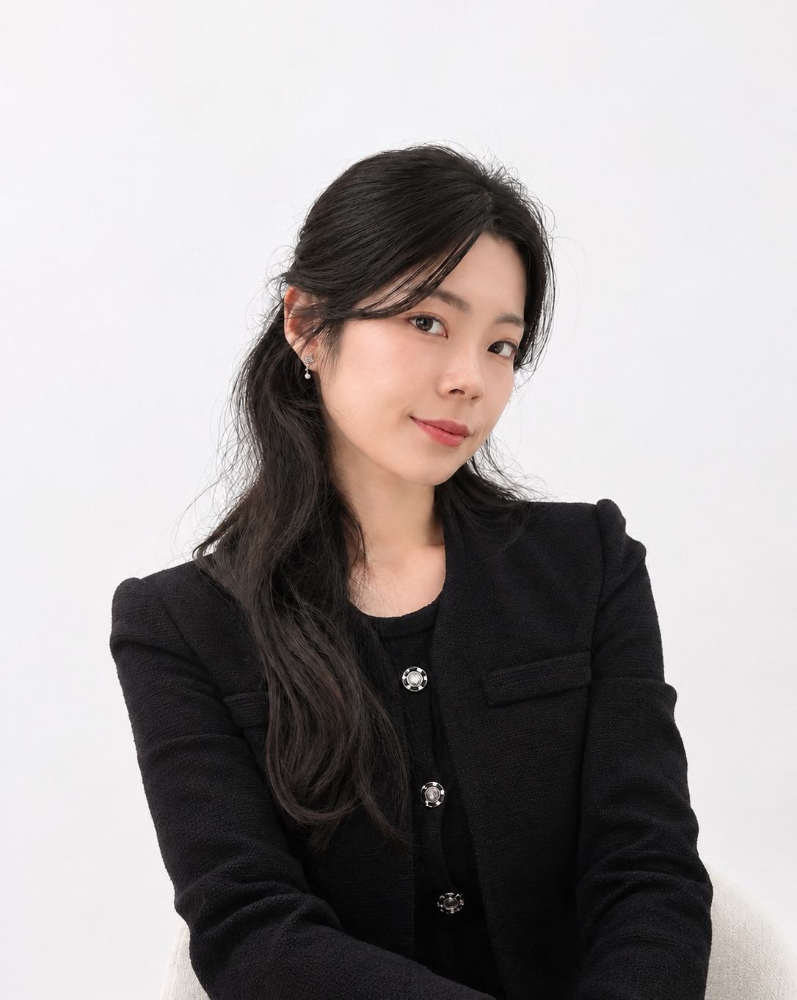
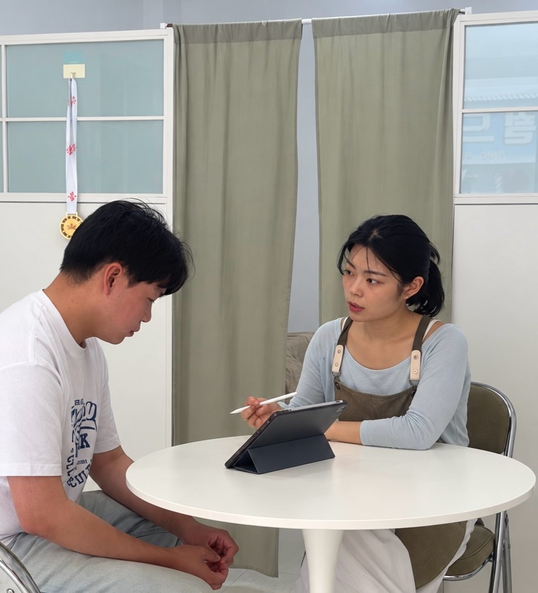
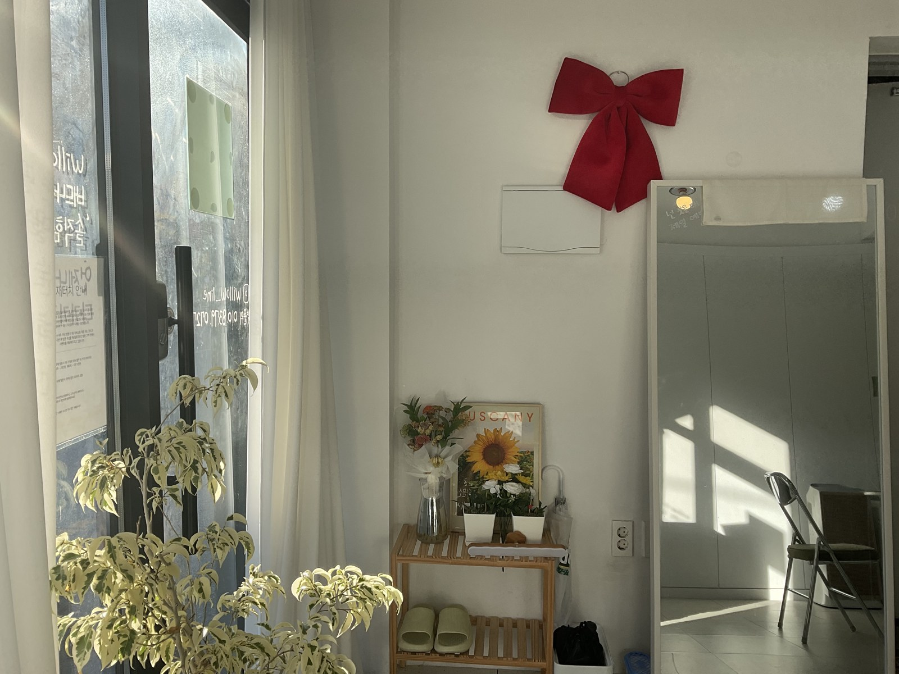
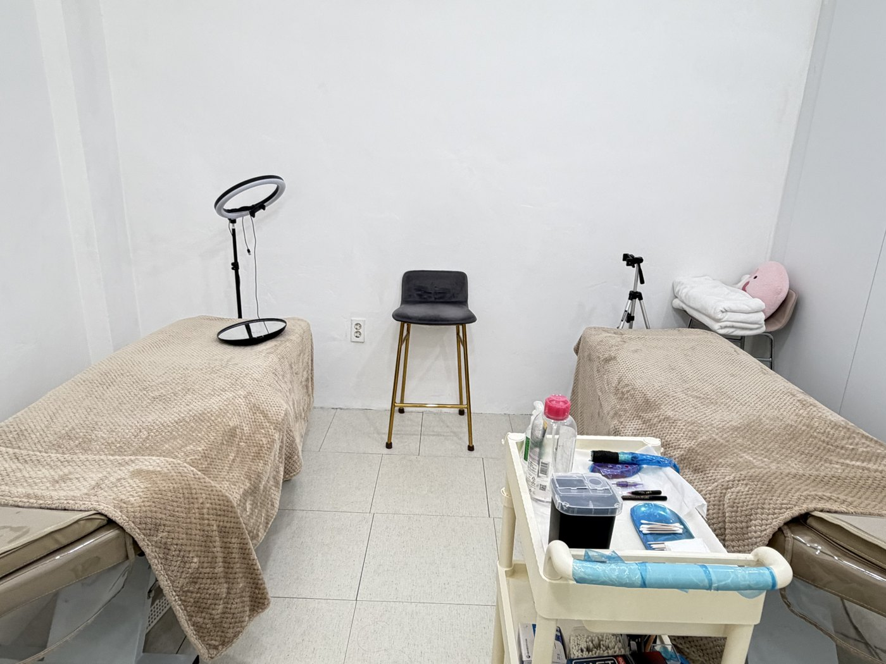
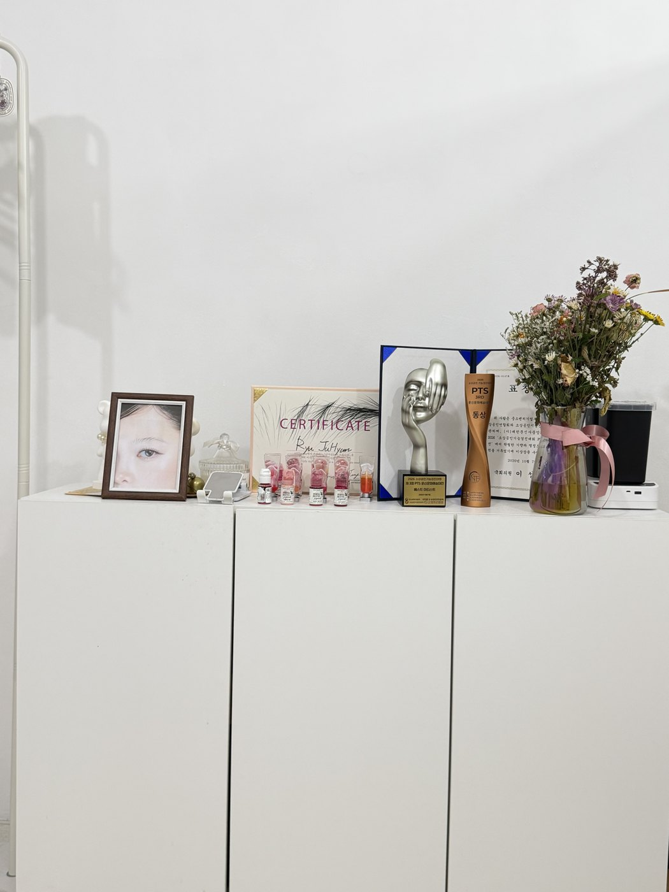

내 얼굴에도 어울릴까요?
얼굴형과 눈매, 남아 있는 모량과 결 방향을 살피고 원하는 분위기를 함께 이야기합니다.
5,000명 이상 시술 경험과 노하우로,처음부터 실패 없는 나만의 눈썹을 찾아보세요.
남자눈썹 알아보기 ↗광주 서구 · 류주현 원장 1:1 맞춤 상담
내 눈썹과 비슷한 사례를 살펴보세요.
남자눈썹 사례는 남자눈썹 페이지에서 확인할 수 있습니다.
윌로우라인 실제 시술 사례입니다. 촬영 각도·표정·시점과 피부 상태에 따라 색감과 결과에는 개인차가 있습니다.

눈썹만 채우기보다, 얼굴의 균형을 먼저 살핍니다.
골격과 눈매, 기존 눈썹의 모량과 결 방향, 피부와 잔흔까지.
원하는 분위기를 충분히 듣고 어울리는 디자인과 기법을 안내합니다.
아버지의 얼굴에 남은 어색한 눈썹.
매일 마주했기에, 자연스러움만큼은 타협하지 않기로 했습니다.
얼굴형과 눈매, 남아 있는 모량과 결 방향을 살피고 원하는 분위기를 함께 이야기합니다.
자연스러운 표현을 지향합니다. 직후에는 일시적으로 진하게 느껴질 수 있으며 회복·탈각을 거치며 부드러워집니다.
피부 민감도와 컨디션에 따라 개인차가 있습니다. 걱정되는 점을 미리 말씀해 주시면 피부 반응을 살피며 진행합니다.
현재 눈썹 사진으로 먼저 상담해 주세요. 잔흔의 색과 진하기, 피부 상태에 따라 적합한 방향을 안내합니다.
자연눈썹(엠보)과 헤어스트록은 별도 기법이며 가격도 다릅니다. 모량·피부·잔흔과 원하는 느낌을 살펴 제안합니다. 이 페이지의 13만 원 이벤트는 자연눈썹(엠보) 기준입니다.
2차 작업의 포함 여부·일정·비용은 예약 전에 상담에서 확인해 주세요. 촬영이나 결혼식 등 중요한 일정이 있다면 가능하면 3~4주 여유를 두고 미리 알려주세요.
윌로우라인을 방문한 고객님이 직접 남겨주신 이야기.
벌써 두번째 시술이네요
외모에 있어 눈썹이 진짜 중요하다고 생각하는데
자연스럽게 오래 잘 유지돼서 계속 찾게 되는거 같아요 !
가격도 다른 곳 비교해보면 합리적인데다
항상 꼼꼼하게 관리해주셔서 감사합니다 ㅎㅎ
앞으로도 여기서 계속 믿고 맡기겠습니다 ~
부끄러워서 사진은 못 올리지만 진짜 자연스럽고 생얼로도 당당하게 돌아다닐 수 있게 만들어주심!!! 금액도 다른 곳이랑 비교해보면 저렴한데 퀄리티는 더 높고 시술 받는 중에도 분위기 편안하게 만들어주셔서 받는 동안 재밌었어요ㅋㅋㅋ 눈썹으로 유명한 곳에서도 받아본 사람으로서 여기가 쵝오,, 이름값 다 필요없고 본인한테 맞는 샵 찾으세요!! 자연스러운 디자인은 여기로 정착💛
제가 눈썹 시술 받고 너무 자연스럽게 꼼꼼히 해주셔서 넘 마음에 들어가지구 저희 아부지도 예약해드렸는데 너무 잘해주신 것 같아요 ㅎㅎ 아빠도 엄청 만족스러워하셔서 뿌듯하구 자연스럽고 훨씬 젊어지신 것 같아요 >.< 예쁘게 해주셔서 감사합니다 ~!!
어떤 기법이 좋은지 공부해 오지 않으셔도 괜찮습니다. 원하는 느낌과 걱정되는 부분부터 알려주세요.

기존 경험과 원하는 느낌, 걱정되는 부분을 나눕니다.
모량과 결 방향, 골격과 피부·잔흔을 살핍니다.
어울리는 디자인과 기법을 설명하고 피부 반응을 살피며 진행합니다.
결을 살릴지, 음영을 더할지.
지금 눈썹과 원하는 느낌에 맞춰 함께 고릅니다.
본래 눈썹의 방향을 따라 한 올씩 결을 표현합니다. 빈 부분을 채우면서 자연스러운 눈썹 모양을 잡아줍니다.
이벤트 13만 원자연스러운 결 표현에 부드러운 음영을 더합니다. 눈썹 뒤쪽이 비어 있거나, 결과 또렷함을 함께 원하는 분께 추천드립니다.
17만 원작은 점을 쌓아 눈썹 전체에 부드러운 음영을 채웁니다. 아이브로우로 정돈한 듯 깔끔한 느낌으로 눈썹을 완성시켜드립니다.
16만 원바늘 하나로 결의 굵기와 방향, 간격을 세밀하게 표현합니다. 본연의 눈썹과 같은 털표현으로 가장 자연스럽고 깃털처럼 표현 가능하며, 통증이 매우 적습니다.
가장 자연스럽고 잔흔이 심해도 커버 가능합니다.
피부와 기존 눈썹 상태에 맞춰 기법을 안내합니다.
숱이 비어 보이는 부분, 매일 그리기 어려운 모양, 남아 있는 잔흔까지.
상담할 때 편하게 말씀해 주세요.
상담과 작업에 집중할 수 있도록, 고객별 위생관리와 공간의 청결을 기본으로 지킵니다.


